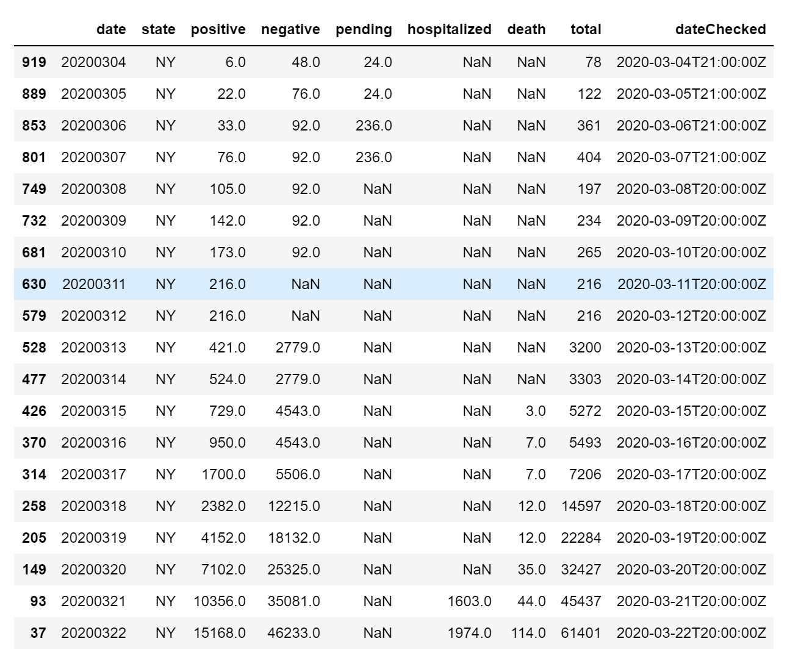
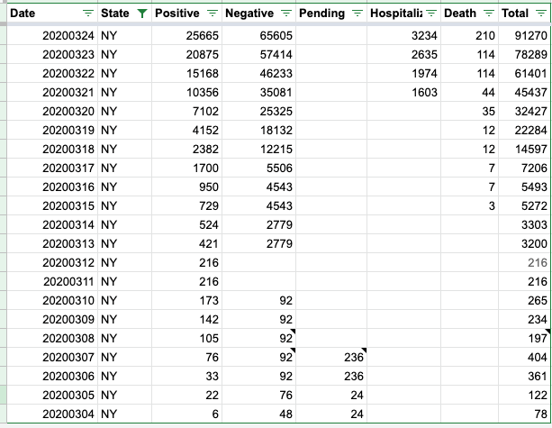
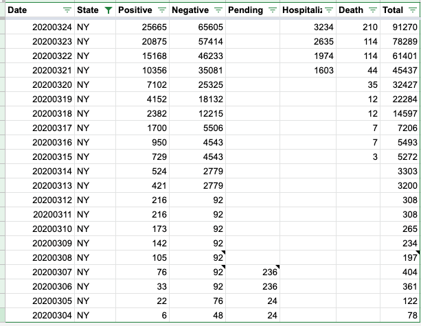

Cumulative count incorrect
The cumulative total for New York is incorrect for two dates 2020-03-11 and 2020-03-12. See image below:

Comments
I had another look at the above data and something is fishy from the 6 March to 13 March. Seems like there were no negative cases and the cumulative count went down more than once
This had a lot to do with spotty reporting out of New York State. They were not reporting negatives for a while and pendings came and went. The data out of New York is now much cleaner (though primarily reported in press conference) and we’re hoping to see the same for California and others.
From March 15 onward, you can check screenshots of what the states had here: https://covidtracking.com/data/state/new-york/
Alexis
On Tue, Mar 24, 2020 at 10:01 AM Ajinkya Kokandakar < notifications@github.com> wrote:
I had another look at the above data and something is fishy from the 6 March to 13 March. Seems like there were no negative cases and the cumulative count went down more than once
— You are receiving this because you are subscribed to this thread. Reply to this email directly, view it on GitHub https://github.com/COVID19Tracking/issues/issues/43#issuecomment-603370941, or unsubscribe https://github.com/notifications/unsubscribe-auth/ACS7NYPCYSCXTP74QUUKTBTRJDROJANCNFSM4LSD6FDA .
– Alexis Madrigal Staff Writer | The Atlantic Visiting Scholar | Information School, UC Berkeley
Thanks, can someone at least fix the cumulative count based on whatever data is available so that models relying on historical data don’t run into problems? I am unsure of the best practices when it comes to data cleaning
Hello, and thank you for helping us keep our data accurate and clean! Here is our historical NY Data: 
And here it is updated: 
Thanks! Glad to help
Sorry I wasn’t sure what repo to raise this issue in. I may have posted in the wrong repo. Is there a way to move this to the “data” repo without creating a duplicate issue?